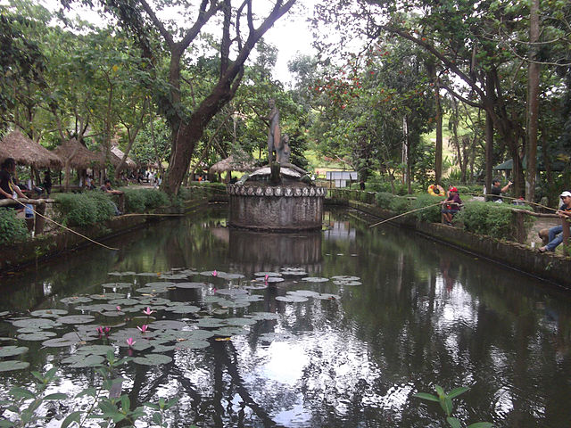

La Mesa Ecopark
North Fairview, Quezon City, Philippines

North Fairview, Quezon City, Philippines
Ecopark a short form of Ecological Park. It is exploited as an amusement park without hampering its natural environment so that the bio-diversity remains unaffected there. Generally a particular area of a forest is demarcated and brought under intensive management for this purpose.
Covering an area of 33 hectares (82 acres) the public park is located along the natural boundary of the La Mesa Watershed Reservation and its elevation is about 40 metres (130 ft) below than the reservoir. After years of neglect, the park underwent a renovation under the "Save La Mesa Watershed Project", a collaboration between Bantay Kalikasan, the Metropolitan Waterworks and Sewerage System and the local government of Quezon City.A fund amounting to ₱247 million was raised for the rehabilitation of the park.[4] It was reopened in September 2004 and was renamed as "La Mesa Ecopark".

Swimming. There are swimming pools here, but they close at 4pm. Entering the pool area costs P80 for adults and P40 for kids, whether you will swim or not.
Biking. This is for free, if you bring your own bike. There are rentals costing P50-90 per hour, but you can only use their designated biking area; quite a laugh actually, for you to rent a huge bike, for example, just to go round and round.
Boating and Fishing. There is a small lake you can boat around in. Rate is P100/boat (max 4 persons). As of posting though, it is closed because of a construction going on. The fishing rod can be rented for P20/day, and you also have to pay for your catch (P80/kl).
Gora 2020. All rights reserved